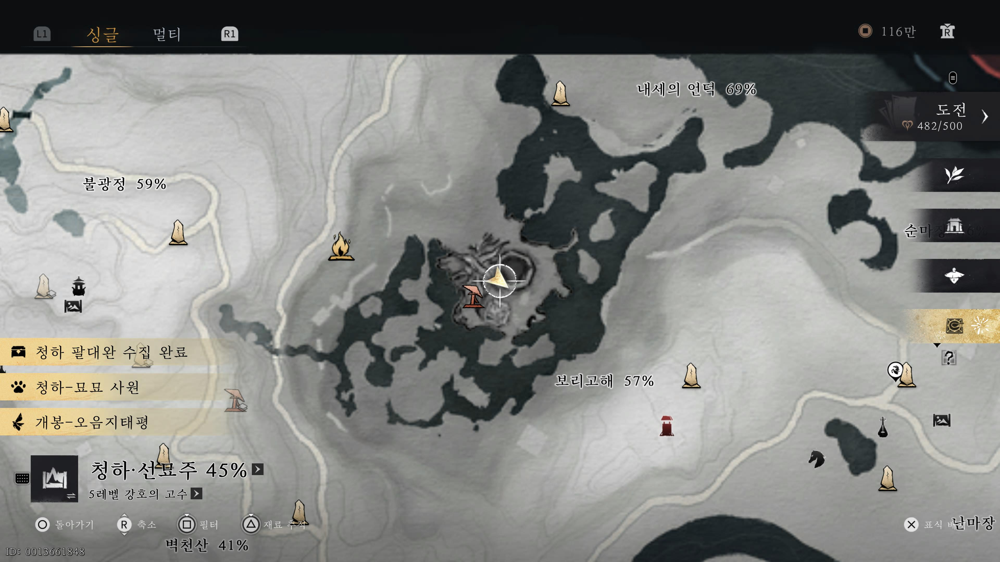
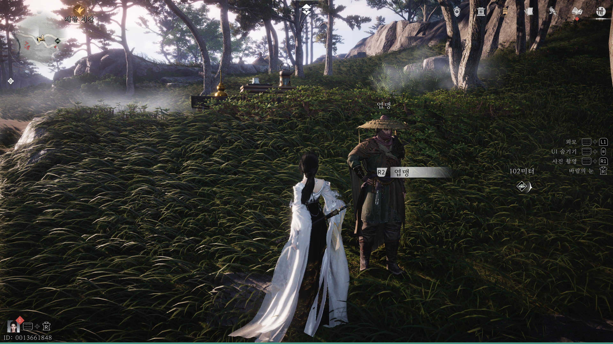
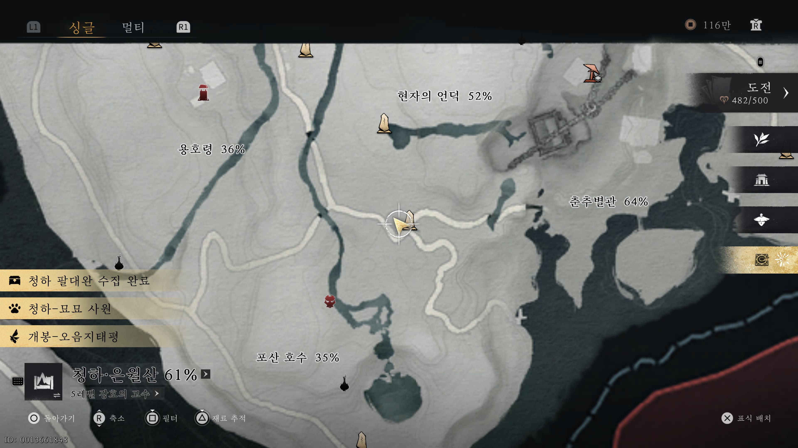

만사록
무쇠 심장의 파동
북방을 지키는 천호군이 무슨 이유로 이곳까지 온걸까?
📜 퀘스트 개요
보리고해의 진수전인 엽만산을 처치한 후 진행할 수 있는 퀘스트입니다.
그의 유품인 단검을 회수하여 올바른 주인에게 돌려주어야 합니다.
단검 획득 (선행 조건)
⚠️ 필수 조건: 보리고해 진수전(보스) '엽만산'을 먼저 클리어해야 합니다.
엽만산 처치 후 아래 위치로 이동하세요.
바닥에 떨어진 '엽만산의 단검'을 획득하면 퀘스트가 시작됩니다.


엽맹에게 전달
단검을 획득한 후 춘추별관 - 별관 뒷산 경계석으로 이동하세요.
안내된 위치에 있는 NPC 엽맹을 찾아 대화를 걸고 단검을 선물해야 합니다.
💡 Tip: 처음 대화 시 '선물하기' 메뉴가 뜨지 않을 수 있습니다. 그럴 땐 대화를 마친 후 다시 한 번 말을 걸어보세요.


엽맹에게 단검을 무사히 전달하면
천호군의 사연을 뒤로하며
퀘스트는 완료됩니다.